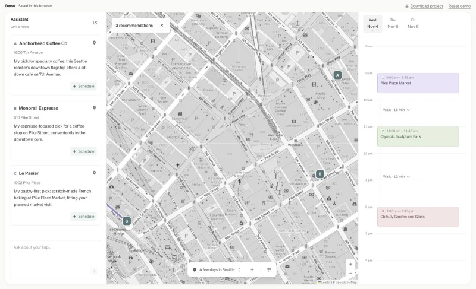
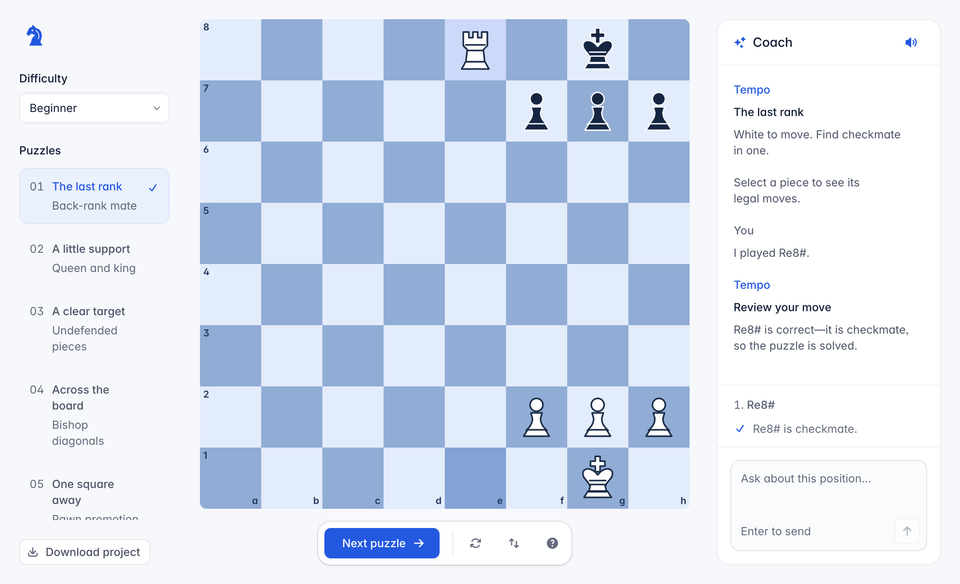
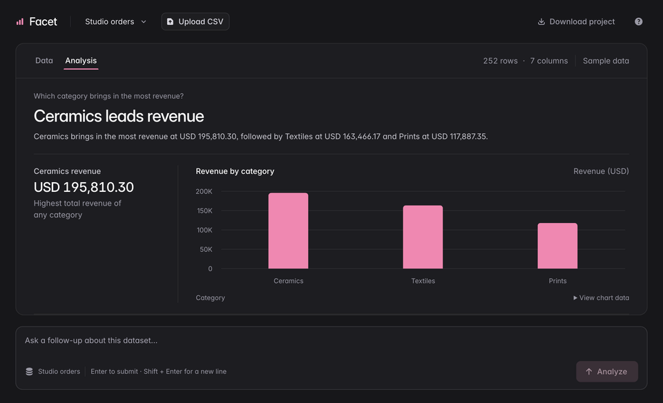
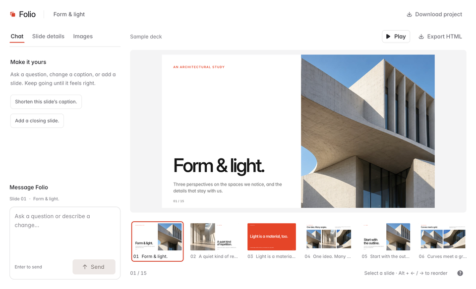
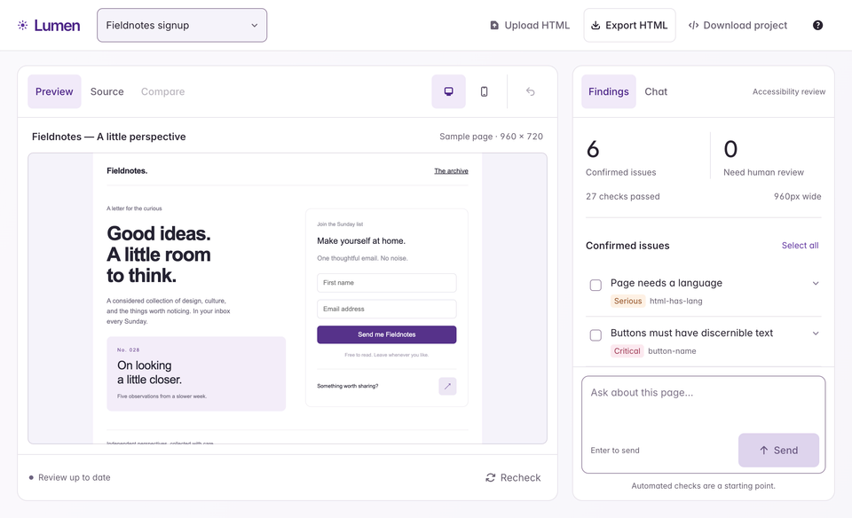
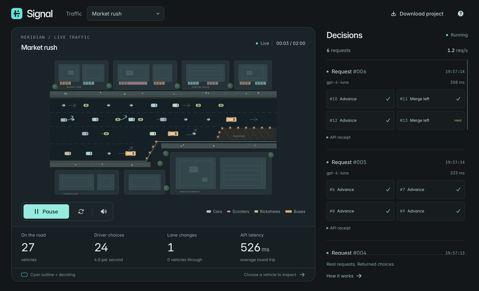
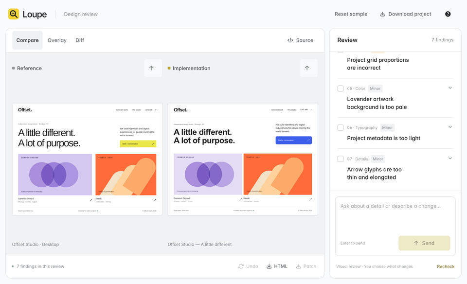
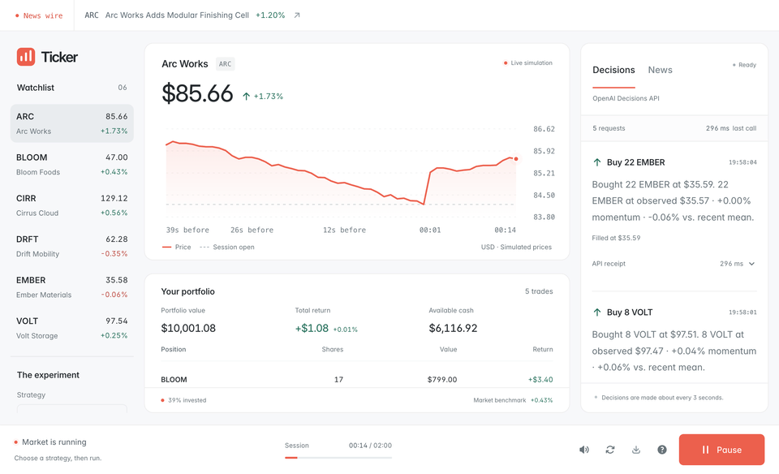

.md

Research places and turn them into a trip itinerary.

Solve chess puzzles with contextual hints and move reviews.

Explore a CSV through questions, charts, and computed answers.

Turn images and a brief into a presentation you can keep refining.

Find accessibility issues, apply selected fixes, and compare results.

Watch live decisions guide vehicles through merges and lane changes.

Compare an implementation with a reference design and fix the source.

Watch AI trades respond to a fictional market and generated news.
Image API demo for capturing or uploading a portrait and generating...
Interactive Speech API demo for trying OpenAI text-to-speech voices.
Realtime API demo that lets you talk to a 3D solar system.
Map-based chat experience to explore the world through conversation.
Find accessibility issues, apply selected fixes, and compare results. GPT-6 Astra
Ask questions about a CSV and get computed answers, charts, tables, and...
Turn images and a brief into an animated presentation, then refine it...
Compare a reference design with an implemented page, identify visual...